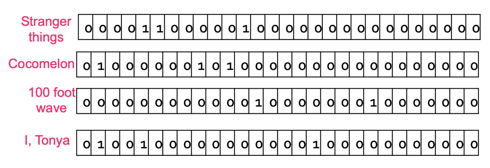
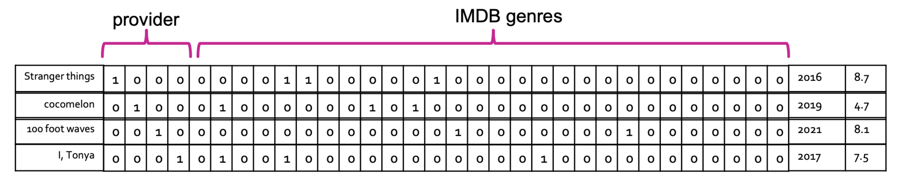
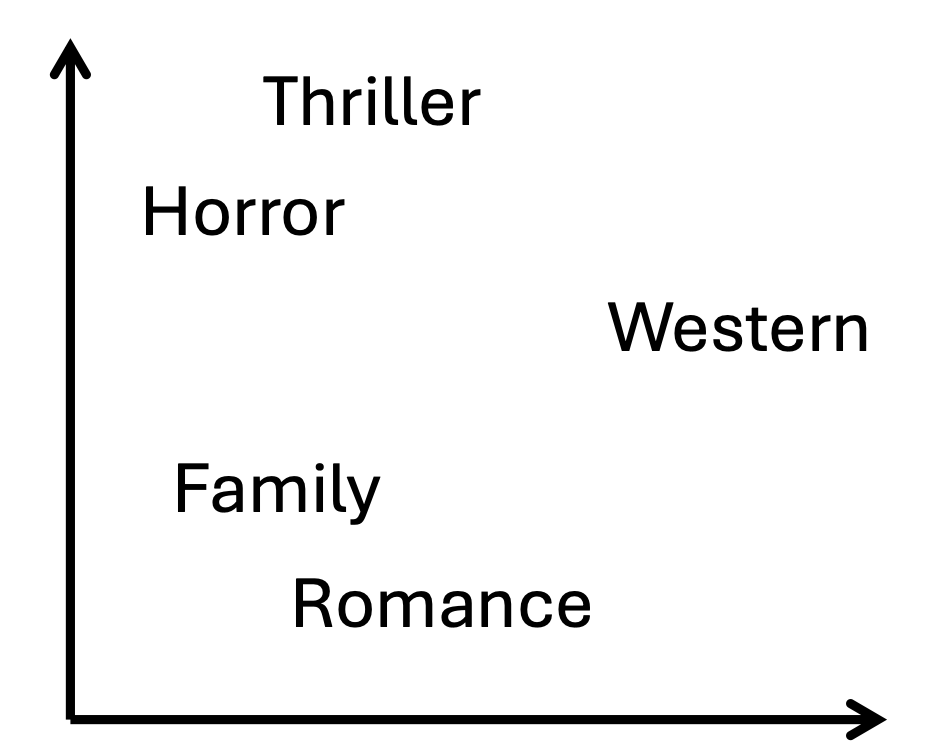

1. Introduction: 데이터 표현의 중요성
딥러닝과 머신러닝의 가장 핵심적인 목표 중 하나는 데이터를 모델이 이해할 수 있도록 ’잘 표현(Representation)’하는 것입니다. 동일한 정보라 할지라도 어떻게 표현하느냐에 따라 모델의 성능이 크게 달라질 수 있습니다. 실제로 훌륭한 데이터 표현을 확보한다면, 복잡한 알고리즘 없이 아주 단순한 알고리즘만으로도 뛰어난 성능을 발휘할 수 있습니다.
하지만 우리가 현실에서 마주하는 데이터는 고차원적(High-dimensional)이고, 복잡한 구조를 가지며(Structured), 이산적(Discrete)이거나 끊임없이 쏟아지는(Never-ending) 형태일 때가 많습니다. 따라서 기계학습의 첫 번째 과제는 이러한 다양하고 복잡한 정보를 어떻게 고정된 길이의 특징 벡터(Fixed-length feature vector) \(x\)로 변환할 것인가에 대한 질문에서 출발합니다.
2. 특징의 종류 (Types of Features)
데이터를 고정된 벡터로 변환하기 앞서, 우리가 다루는 데이터의 속성을 파악해야 합니다. 머신러닝 관점에서 데이터는 크게 두 가지 범주로 나뉩니다.
- 수치형 데이터 (Numerical Data):
- 연속형 (Continuous): 키(Height), 몸무게(Weight) 등 무한한 정밀도를 가질 수 있는 값.
- 이산형 (Discrete): 나이(Age), 연도(Year) 등 셀 수 있는 특정 정수 값.
- 범주형 데이터 (Categorical Data):
- 순서형 (Ordinal): 초급, 중급, 고급 등 항목 간에 명확한 대소 혹은 순위 관계가 존재하는 값.
- 명목형 (Nominal): 빨강, 파랑, 초록 등 순서나 우위 없이 이름만으로 구분되는 값.
3. 수치형 데이터의 처리: 정규화 (Normalization)
수치형 데이터는 그 자체로 수식 연산이 가능하므로, 스케일을 맞춰주는 정규화(Normalization) 과정만 거치면 모델에 직접 사용할 수 있습니다. 예를 들어 한 사람의 특징으로 ’몸무게, 키, 발 사이즈’가 주어졌을 때, 각각의 단위와 값의 범위가 다르므로 이를 맞춰주는 작업이 필수적입니다.
샘플 \(i\)의 특징 값을 \(x_{i}\)라고 할 때, 널리 쓰이는 두 가지 정규화 방법은 다음과 같습니다.
- 표준화 (Standardization): \[x_{i}^{\prime}=\frac{x_{i}-\mu}{\sigma}\] 여기서 \(\mu\)는 해당 특징의 전체 평균, \(\sigma\)는 표준편차를 의미합니다. 데이터를 평균이 0, 분산이 1인 정규분포 형태로 변환합니다.
- 최소-최대 정규화 (Min-max Normalization): \[x_{i}^{\prime}=\frac{x_{i}-x_{min}}{x_{max}-x_{min}}\] 여기서 \(x_{min}\)과 \(x_{max}\)는 각각 데이터의 최솟값과 최댓값입니다. 이 변환을 거치면 모든 데이터가 0과 1 사이의 값으로 스케일링됩니다.
4. 범주형 데이터의 인코딩 (Categorical Data Encoding)
수치형 데이터와 달리, 텍스트나 범주로 이루어진 데이터는 컴퓨터가 연산할 수 있도록 숫자로 매핑해주는 인코딩(Encoding) 과정이 필요합니다.
4.1. 정수 인코딩 (Integer Encoding)
가장 단순한 방법은 각 범주값에 임의의 정수를 부여하는 것입니다. 예를 들어 스트리밍 플랫폼(Provider) 범주가 {Netflix, Prime Video, HBO Max, Hulu}로 주어졌다면, 각각을 1, 2, 3, 4로 매핑합니다.
- 한계점: 이 방식은 명목형 데이터에 부적합합니다. 모델은
Netflix(1) < Prime Video(2)혹은Netflix(1) + Prime Video(2) = HBO Max(3)와 같은 존재하지 않는 순서나 수학적 관계를 암묵적으로 학습하게 됩니다. - 적합한 사례: 학력(학사=1, 석사=2, 박사=3)과 같은 순서형(Ordinal) 변수에는 비교적 합리적입니다. 하지만 이 경우에도 학사-석사 간의 차이와 석사-박사 간의 차이가 동일하다는(equally spaced out) 가정이 깔리게 되는 단점이 있습니다.
4.2. 원-핫 인코딩 (One-hot Encoding)
정수 인코딩의 한계를 극복하기 위해, 이산값을 이진 벡터(Binary vector)로 표현하는 원-핫 인코딩을 사용합니다.
범주의 총 개수만큼 벡터의 길이를 만들고, 해당하는 인덱스만 1, 나머지는 모두 0으로 채웁니다. 정수 인코딩의 값이 곧 벡터에서 1이 위치할 인덱스가 됩니다. * Netflix: [1, 0, 0, 0] * Prime Video: [0, 1, 0, 0] * HBO Max: [0, 0, 1, 0] * Hulu: [0, 0, 0, 1]
4.3. 멀티-핫 인코딩 (Multi-hot Encoding)
원-핫 인코딩의 확장형으로, 하나의 변수가 동시에 여러 값을 가질 수 있을 때 사용합니다.
예를 들어 영화 데이터셋에서 28개의 장르 중 ’Stranger Things’가 Drama, Fantasy, Horror 세 가지 장르를 동시에 가진다면 , 해당되는 3개의 인덱스를 모두 1로 표시합니다.

위 그림처럼 Cocomelon, 100 foot wave, I, Tonya 등 각 영화의 다중 속성을 희소 벡터(Sparse vector) 형태로 변환할 수 있습니다.
5. 기존 인코딩의 한계와 임베딩 (Embedding)의 등장
각 특징(Feature)들에 대한 인코딩이 완료되면, 이를 모두 이어 붙여(Concatenate) 하나의 최종 행렬(Matrix) 혹은 특징 벡터를 완성합니다. 이는 추천 시스템에서 아이템의 프로필을 생성하는 것과 완전히 동일한 원리입니다.

하지만 위 표와 같이 원-핫/멀티-핫 인코딩을 단순 결합한 방식에는 치명적인 세 가지 단점이 존재합니다.
- 희소성 (Sparse): 대부분의 값이 0으로 채워져 메모리와 연산이 비효율적입니다.
- 고차원 (High-dimensional): 범주가 늘어날수록 벡터의 길이가 기하급수적으로 길어집니다.
- 의미적 유사성 결여 (No semantic similarity): 예를 들어 ’공포(Horror)’는 ’로맨스(Romance)’보다 ’스릴러(Thriller)’에 내용적으로 훨씬 가깝습니다. 하지만 원-핫 인코딩 공간에서 Horror 벡터와 Thriller 벡터를 내적(Dot product)하면 0이 되어 서로 직교(Orthogonal)하므로, 모델은 두 장르가 완전히 독립적이라고 착각하게 됩니다.
임베딩 공간 (Embedding Space)으로의 투영
이 문제를 해결하는 핵심 기술이 바로 임베딩(Embedding)입니다. 임베딩은 이산적인 범주형 특징들을 저차원 공간(Low-dimensional space)으로 변환하는 기법을 뜻합니다.
좋은 임베딩은 다음과 같은 속성을 가져야 합니다. * 밀집형 (Dense): 0과 1이 아닌 연속적인 실수(Floating-point) 값들로 채워집니다. * 저차원 (Low-dimensional): 범주의 개수가 수백만 개라도 임베딩 벡터는 수십~수천 차원으로 압축됩니다. * 의미적 유사성 캡처 (Capture semantic similarity): 데이터 간의 의미적 관계가 벡터 공간에서의 거리(Distance)로 표현됩니다.

위 그림처럼 임베딩이 잘 구축되면, Thriller와 Horror는 공간상에 가깝게 위치하게 됩니다. 이렇게 의미를 내포한 좋은 임베딩을 입력으로 사용하면, 아주 단순한 추천 모델이나 클러스터링 알고리즘만으로도 훌륭한 성능을 낼 수 있습니다.
6. 표현 학습과 딥러닝 (Representation Learning & Neural Networks)
그렇다면 데이터의 의미를 담아내는 임베딩 벡터는 어떻게 찾아낼까요? 기계학습에서는 이를 표현 학습 (Representation Learning)이라는 하나의 독립적인 과제로 다룹니다. 이는 명시적인 정답 라벨이 주어지지 않은 상태에서 데이터의 구조를 파악하는 비지도 학습 (Unsupervised task)에 해당합니다.
전통적인 표현 학습(임베딩) 방법론들은 주어진 행렬(데이터)을 압축한 뒤 다시 복원할 때 발생하는 재구성 오차(Reconstruction error)를 최소화하는 것을 ’좋은 표현’의 기준으로 삼았습니다. * SVD (특이값 분해): \(R=U\Sigma V^{\top}\) 에서, 분해된 행렬 \(U\)는 행(Row)에 대한 임베딩을, \(V\)는 열(Column)에 대한 임베딩을 나타냅니다. * UV 분해: \(R=UV^{\top}\) 방식 역시 행렬 \(U\)와 \(V\)를 각각 행/열의 저차원 임베딩으로 활용합니다.
딥러닝 관점에서의 임베딩 (Neural Networks for Embeddings)
최근의 딥러닝 모델들은 그 자체로 아주 강력한 ‘표현 학습기(Representation Learner)’로 기능합니다. 특정 문제(Task) \(P\)를 풀기 위해 거대한 신경망 \(f_{\theta}\)를 학습시킨다고 가정해 보겠습니다. 이 신경망의 구조를 수학적으로 두 부분으로 분리할 수 있습니다.
\[f_{\theta}(x) = h_{\rho}(g_{\phi}(x)) \quad (\text{단, } \theta=\{\phi,\rho\})\]
여기서 각 기호의 의미는 다음과 같습니다. 1. \(x\): 모델에 들어가는 원시/초기 입력 데이터 특징(예: 정규화된 픽셀 값이나 단순 인코딩 벡터). 2. \(g_{\phi}(x)\): 네트워크의 앞단(Front-end) 층들이 \(x\)를 변환하여 생성해 낸 은닉 벡터. 이것이 바로 모델이 문제 \(P\)를 풀기 위해 스스로 찾아낸 가장 적합하고 밀집된 임베딩(Learned representation)입니다. 3. \(h_{\rho}\): 주로 신경망의 마지막 레이어(Classifier 등)를 지칭하며 , 고차원적인 임베딩 \(g_{\phi}(x)\)를 입력으로 받아 최종적인 예측(Downstream task)을 수행하는 모델로 볼 수 있습니다.
결론적으로, 딥러닝이 높은 성능을 달성하는 근본적인 이유는 모델 \(g_{\phi}\)가 원시 데이터를 모델이 학습하기 가장 유리한 임베딩 공간으로 매핑하는 표현 학습 능력을 내재하고 있기 때문입니다.